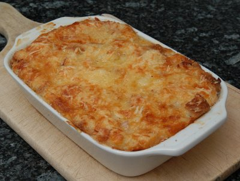

| Zutaten für 4 Personen: | |
| 300 g | altes Brot |
| 8 dl | Milch |
| 200 g | Speckwürfeli mager |
| 300 g | Emmentaler |
| Muskatnuss | |
| Aromat | |
Brot klein schneiden und mit 6 dl heisser Milch übergiessen, 25 Minuten zugedeckt stehen lassen.
Ofen auf mittlere Hitze vorheizen.
Inzwischen Speckwürfeli glasig braten.
Die Auflaufform gut buttern.
Brot lagenweise mit in Scheibchen geschnittenem Emmentaler Käse und den Speckwürfeli in die Auflaufform einfüllen, zuoberst soll Käse sein.
2 dl Milch mit Muskatnuss und Aromat gut würzen, über die Speise giessen und den Auflauf im vorgeheizten Ofen bei mittlerer Hitze etwa 50 Minuten backen.
Herbert Eigenmann, Code: BRZ
Gratuliere, der Zürcher Brotauflauf ist fantastisch. Martha Zumbühl, 1.4.2008
Endlich selber gekocht. Ganz gutes Ergebnis. Es schmeckte ein bisschen wie Fondue. Sehr einfach zuzubereiten. RE 11.4.2010
@LINKBACK_TAG@ @WAKELOCK@